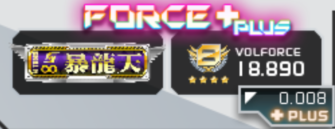
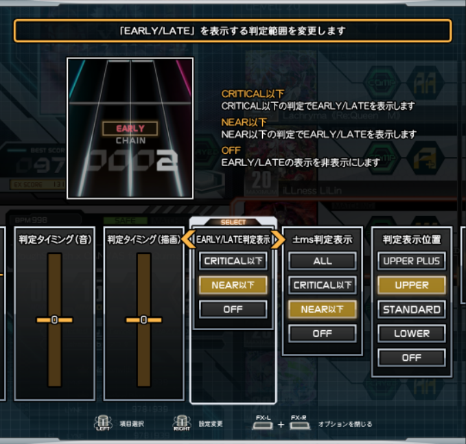

Salut à toi, passager.
Tu as fait le bon choix en scannant ce code QR. Un bon équipier du vaisseau doit savoir s'en remettre au manuel des machines lorsqu'il ne sait pas encore s'en servir correctement.
Tu as fait le bon choix en scannant ce code QR. Un bon équipier du vaisseau doit savoir s'en remettre au manuel des machines lorsqu'il ne sait pas encore s'en servir correctement.

Sound Voltex est un jeu de rythme musical à défilement vertical, aussi appelé VSRG. Le principe de gameplay est simple : plusieurs types de notes défilent sur l'écran, et le joueur doit appuyer en rythme au moment où les notes arrivent en bas de la zone de jeu.

En plus des notes qui défilent, le joueur doit suivre des lasers à l'écran avec les deux encodeurs rotatifs. (Un bleu à gauche et un rouge à droite)

Le panneau de Sound Voltex est composé de 7 boutons et deux encodeurs rotatifs.

Tous les éléments du panneau sont utilisés pendant le gameplay, à l'exception du bouton "START".
A première vue, l'interface de Sound Voltex peut sembler difficile à utiliser, car tout est en japonais. Je vais essayer de te donner les clés pour que tu puisses lancer ta partie tranquillement.
Pour démarrer une partie sans carte, commence par introduire un jeton dans la machine, puis appuie sur START.

Appuie sur START au prochain écran pour skiper l'identification par carte.

Sélectionne ensuite le mode de jeu NORMAL à l'aide des encodeurs rotatifs (VOL-L / VOL-R) et utilise START pour confirmer.

De la même façon, sélectionne LIGHT START.

Choisis ensuite ton APPEAL CARD, une sorte d'image de profil qui n'a pas d'incidence sur le gameplay. Prends simplement celle que tu préfères.

Lance la partie avec GAME START.

Au prochain écran, tu peux choisir de faire le tutoriel du jeu en choisissant YES (ou NO pour le skipper).

Tu es maintenant dans l'écran de sélection des chansons, si tu utilises un casque ou des écouteurs, tu peux régler le volume avec les bouttons sur le numpad : 7 pour augementer et 1 pour baisser.
Utilise l'encodeur rotatif droit pour naviguer et START pour sélectionner.
Si tu te trompes à un moment, utilise le bouton FX Gauche pour revenir en arrière.
Je te conseille de classer les chansons par niveau. Pour ce faire, choisis le troisième dossier,
celui où est écrit "(Lv 1~20)".

Choisis ensuite le niveau de difficulté (entre 1 et 20) que tu veux jouer.
Si c'est la toute première fois que tu joues, je te conseille personnellement :

Une fois que tu as ouvert le dossier du niveau que tu souhaites jouer, tu peux sélectionner ta chanson et confirmer avec START.

Appuie une nouvelle fois sur START pour confirmer ton choix de difficulté.

Après le chargement de la chanson, tu seras accueilli par l'écran de matching.
Cet écran sert à de nombreuses choses, comme modifier ton offset et ta vitesse de
défilement.
Si c'est la première fois que tu joues, tu peux l'ignorer et skipper l'attente en appuyant
sur les deux boutons FX en même temps.

La chanson va se lancer, c'est à toi de jouer !
Si tu possèdes une carte de passager, tu vas pouvoir accéder à des fonctionnalités exclusives au membres, comme la sauvegarde de tes scores sur le serveur, l'accès au PASELI et plein d'autres choses !
Si tu viens d'obtenir ta carte, tu dois d'abord créer ton compte sur la borne. Je t'explique :
Pour commencer, trouve le scanner de carte. Il est situé juste en dessous du pavé numérique et il est indiqué avec ce visuel :

Passe simplement ta carte au dessus pour la scanner. Lorsque ce sera bon, la machine fera un effet sonore et un écran de chargement apparaitra.
Après le chargement, un écran avec deux options apparait. Choisis celle du haut (bleue) avec les encodeurs rotatifs et valide avec START.

Le prochain écran est celui des conditions d'utilisation, sélectionne YES pour les accepter.

Ensuite, tu dois créer ton code secret à 4 chiffres. Il est important de ne pas l'oublier ! Il te sera demandé à chaque fois que tu scanneras ta carte sur la borne ainsi que pour la création de ton compte sur le site internet.
Pour entrer ton code, sers toi du pavé numérique, il est demandé de le taper une 2ème fois pour le confirmer.
Tu pourras changer ce code à l'aide de l'interface web plus tard.
Note : Le jeu refuse les codes de 4 chiffres identiques (1111, 2222, etc.), si vous mettez un code de ce type, le jeu vous donnera une erreur.

L'écran suivant est très important, il t'indique ton numéro de carte qui sera indispensable pour créer ton compte sur la plateforme web.
S'il apparait censuré avec des "X", tu peux l'afficher en entier en appuyant sur un des boutons FX.
Je te conseille vivement de noter cet identifiant ou de le prendre en photo avec ton téléphone maintenant.

Maintenant, tu dois entrer ton pseudo (max 8 caractères), sers toi des encodeurs pour choisir la lettre et de start pour entrer la lettre.
Les options "BACK" et "END" au début de l'alphabet servent respectivement à effacer un caractère et à terminer ta sélection.
Lorsque vous tapez une note blanche (BT) ou orange (FX), votre précision rythmique est jugée par le jeu.
CRITICAL : Si vous êtes parfaitement en rythme, le jeu vous accordera le maximum de points pour cette note.

NEAR : Si vous tapez correctement une note trop tôt où trop tard, le jeu vous donnera moins de points pour cette note. Il vous indiquera également si vous étiez trop tard ou trop tôt. Le jugement NEAR n'existe pas pour les notes longues et les lasers.

ERROR : Si vous ratez une note, le jeu ne vous accordera pas de points et fera descendre votre barre de vie. Vous perdrez également votre combo actuel.
A la fin de votre chanson dans Sound Voltex, vous aurez toujours un score qui est un indice votre performance personnelle sur la chanson que vous venez de jouer.
Le score maximum sur une chart est toujours de 10 000 000.
Votre score est déterminé seulement par votre ratio de CRITIAL / NEAR / ERROR. Le combo, ainsi que votre barre de vie ne changent rien à votre score.
En fonction de votre score, une note allant de D à S vous sera attribuée.
| Note | Score |
|---|---|
| S | ≥ 9 900 000 |
| AAA+ | ≥ 9 800 000 |
| AAA | ≥ 9 700 000 |
| AA+ | ≥ 9 500 000 |
| AA | ≥ 9 300 000 |
| A+ | ≥ 9 000 000 |
| A | ≥ 8 700 000 |
| B | ≥ 8 000 000 |
| C | ≥ 7 000 000 |
| D | < 7 000 000 |
Votre barre de vie est affichée à droite de l'écran pendant que vous jouez.
Il y a deux types de barres de vie dans un crédit normal : l'EFFECTIVE RATE (bleue) et l'EXCESSIVE RATE (orange), qui sont complètement différentes.
Si vous n'avez pas touché aux options du jeu, vous jouez avec la barre bleue.
Lorsque vous jouez avec la barre EFFECTIVE RATE, elle commence à 0% et se remplit au fur et a mesure de la chanson, en fonction de votre performance. Il faut qu'elle arrive à au moins 70% à la fin de la chanson pour que votre score soit considéré comme CLEAR.

Si vous souhaitez plus de difficulté, et potentiellement plus de VOLFORCE (+ d'infos en dessous), vous pouvez choisir de jouer avec la barre EXCESSIVE RATE.
Dans ce mode, la barre commence à 100% et ne doit jamais arriver 0% jusqu'a la fin de la chanson, sous peine d'arrêt du jeu.
Vous perdez plus de vie lorsque vous ratez des notes, et vous en regagnez moins en jouant parfaitement.
Je déconseille fortement d'utiliser l'EXCESSIVE RATE aux débutants.

Le score n'est pas le seul indicateur de votre performance à la fin d'une chanson. Il y'a également ce qu'on appelle les "lampes"
En plus de votre score, votre play aura une lampe qui peut être l'une des 5 suivantes :
La lampe que vous avez sur une chanson est complètement indépendante de votre score, et elle ne peut pas baisser. Par exemple, si vous obtenez un ULTIMATE CHAIN, et que vous obtenez un meilleur score par la suite en CLEAR, la lampe restera ULTIMATE CHAIN.
Des que vous arrivez sur l'écran de score, je vous conseille d'appuyer sur les deux boutons FX en même temps pour afficher les détails.
1 - Votre score
2 - Votre note (ici S)
3 - Votre lampe (ici ULTIMATE CHAIN)
4 - Titre de la track
5 - Votre score par rapport a votre meilleur score, affiché avec un + si vous l'avez vaincu et avec un - si vous avez fait moins bien
6 - La difficulté de la song (ici Advenced 15)
7 - Le challenge actif et le nombre d'éssais consécutifs avant de faire votre score (Uniquement affiché en Premium time start)
8 - Le détail de toutes les notes de la chart avec CHIP qui correspond aux notes simples BT, LONG qui correspond aux notes longues BT, et VOL qui correspond aux Lazers. Avec ceci vous pouvez voir celles que vous avez tapé en Critical, Near ou Error. Pour finir il y a aussi le combo maximum.
9 - Les détails de vos jugements, le nombre de CRITICAL / NEAR / ERROR et le nombre de EARLY / LATE.
10 - Votre barre de vie a la fin de la track
11 - Récapitulatif de la monnaie du jeu gagnée (en PCB)
12 - La jauge d'extrack, en standard start, clear une track vous permet de remplire une case de la jauge (5 au total) et lorsqu'elle est remplie, vous bénéficierez d'une track supplémentaire pendant votre crédit (4 au lieu de 3)
De plus, au dessus de votre lampe, il peut y avoir plusieurs types d'encadrés :
Si l'encadré est bleu, il indique que vous venez de battre votre meilleur score !
Si l'encadré est bleu et avec le pseudo d'un autre joueur, vous venez de battre le meilleur score jamais enregistré sur la borne !
Si l'encadré est jaune, vous venez de faire le meilleur score de tout le serveur Flower confondu !
Dans Sound Voltex, il existe deux métriques qui permettent d'estimer le niveau global d'un joueur. Le premier est le "SKILL ANALYZER".
Le SKILL ANALYZER reprend le même concept que dans Beatmania avec ses "Dans". Il s'agit d'une sorte d'examen que propose le jeu afin de tester votre niveau actuel.
Le but du SKILL ANALYZER est d'arriver à clear trois chansons prédéfinies en gardant la même barre de vie entre les trois. Si elle tombe à 0 avant la fin de toutes les chansons, vous échouez. Si vous parvenez a toutes les finir sans mourir, vous réussissez.
Pour accéder au SKILL ANALYZER, vous devez le selectionner au moment de la sélection du mode de jeu. Son prix est le même qu'un LIGHT START : 1 Jeton ou 100 Paseli.
Cette métrique est découpée en 12 niveaux. Chaque niveau vous propose plusieurs listes de 3 chansons prédéfinies (appelées "courses"), avec bien entendu une difficulté croissante.

Arriver au bout d'un SKILL ANALYZER vous octroie un badge correspondant au niveau que vous avez réussi, qui sera affiché à côté de votre nom sur votre carte de joueur.
Arriver au bout de la dernière course d'un niveau de SKILL ANALYZER vous octroie des ailes argentées autour de votre badge.
Arriver au bout de toutes les courses d'un niveau de SKILL ANALYZER vous octroie des ailes dorées autour de votre badge.
Arriver au bout de toutes les courses d'un niveau de SKILL ANALYZER avec une moyenne de score générale dépassant la valeur dans tableau ci-dessous vous octroie un halo doré autour de votre badge.
| Niveau | Score moyen à atteindre pour le halo |
|---|---|
| 1-9 | 130% ou 9 300 000 |
| 10 | 150% ou 9 500 000 |
| 11 | 160% ou 9 600 000 |
| ∞ | 170% ou 9 700 000 |
La liste complète des courses et des chansons pour Sound Voltex Vivid Wave est disponible ici.
La deuxième métrique disponible pour évaluer la performance d'un joueur dans Sound Voltex est la "VOLFORCE".
Il s'agit d'un nombre, compris entre 0.00 et ~22.00, qui donne une approximation de votre niveau actuel.
Contrairement au SKILL ANALYZER, la VOLFORCE est calculée automatiquement lorsque vous jouez normalement, et ne nécéssite pas de mode de jeu spécifique.
A chaque fois que vous finisez une chanson, l'algorithme de VOLFORCE lui attribue une valeur, pondérée par plusieurs facteurs comme le niveau de la chanson et votre score.
Votre total de VOLFORCE est simplement l'addition de vos 50 meilleurs scores (ceux qui ont la VOLFORCE la plus élevée). Il est donc normal que votre progression ralentisse drastiquement lorsque vous atteignez votre 50ème score au total.
La valeur de VOLFORCE pour chaque chanson n'est pas directement disponible sur le jeu, mais vous pouvez la consulter depuis l'interface flower.
Le jeu propose un menu d'options complet permettant de s'adapter aux joueurs. Pour y accéder, vous devrez une fois dans l'écran de sélection des chançons, appuyer sur les deux bouttons FX-L et FX-R en même temps.
Pour naviguer à travers les différents sous menus, utlilisez FX-L pour vous déplacer de gauche a droite, et FX-R pour effectuer les réglages.
Pour bien progresser dans Sound Voltex, il est très important de savoir régler sa High-Speed. Elle correspond a la vitesse de défilement des objets à l'écran. La High-Speed définit en autres termes le juste millieu entre son temps de réaction et ce qu'on est capable de lire. Attention, Réduire sa vitesse ne change pas le bpm de la chart. Que vous ayez la speed maximale ou minimale vous devrez taper les bouttons à la même vitesse.
Si vous êtes débutant, je vous conseille de vous mettre a 3.00 pour commencer. Pensez à appuyer sur numpad 6 pour sauvegarder votre vitesse. Si vous l'avez fait correctement, un trait devrait apparaitre (1). Sinon c'est qu'elle n'est pas sauvegardé
Il est également possible de régler votre vitesse lors du Matching Screen, et même en jeu ! pour cela, tout en restant appuyé sur START tournez VOL-R. Astuce : si vous voulez régler plus précisément, double tapez start avant de hold vous permetra d'aller de 1 en 1. Comme pour le menu d'options, n'oubliez pas d'appuyer sur numpad 6 pour sauvegarder votre vitesse.
Dans Sound Voltex, la précision est la clé de la réussite, pas de précision, pas de bon scores, pas de Volforce. Mais il est possible que vous vous sentez précis et que vous ne voyez que des Early ou que des Late. Si c'est le cas, le problème ne vient pas forcément de vous; Entre le hardware de la borne, le périphérique audio et surtout votre propre décalage auditif, il n'est pas anodin d'avoir besoin de régler un décalage précis pour bien s'adapter à son rythme.
Pour trouver son décalage vous pouvez regarder à la fin de ses tracks le nombre de Early / Late et voir si un revient plus souvent que l'autre. Vous pouvez aussi régler votre Early/Late position sur UPPER et observer en direct le Early ou le Late sur une note ou vous êtes sur que vous avez été précis. Chose importante, je conseille fortement de faire tout ça sur des charts que vous maitrisez, n'hésitez pas à prendre un niveau plus facile pour vous afin d'obtenir un résultat précis à la fin.

Pour régler son offset il faut savoir qu'il y a deux types d'offset assez différents:
Le sound timing vous permetra d'ajuster le décalage du son, allant de -20 à + 20. En utilisant VOL-L, mettez un offset + si vous avez trop de Early et un offset - si vous avez trop de Late.
Le draw timing est un offset visuel qui permet d'ajuster le décalage de la ligne de jugement, allant de - 20 à + 20. En utilisant VOL-R, mettez un offset + si vous avez trop de Early et un offset - si vous avez trop de Late.
Si vous ne savez pas lequel utiliser, je vous conseillerai d'utiliser le Sound timing.
Si vous tapez une note plus de 41ms en avance ou en retard, elle sera considérée comme un Near, mais par défaut Lorsque vous faites un Near il s'affiche a l'écran un Early ou un Late. Or cette condition d'affichage est modifiable.
Critical : Affiche un Early/Late plus transparant qui apparait seulement si la note a été touchée entre 20.5ms et 41ms de retard ou d'avance
OFF : N'affiche pas de Early/Late sur votre écran
En plus des Early/Late, vous pouvez voir précisement de combien de milli-secondes vous êtes décalé.
par défaut, les ms s'affichent après un Near mais encore une fois vous pouvez le changer :
All Affiche en permanance les ms : Gris quand elles sont inférieures à +20.5ms ou -20.5ms, en Rouge ou Bleu clair quand elles sont comprises entre +20.5ms ou -20.5ms et +41ms ou -41ms, et en Rouge ou bleu quand elles sont supérieures à +41ms ou -41ms.
Critical: les affiche aussi en
Il est important de prendre les bons réflexes rapidement lors de sa progression dans le jeu, comme la bonne position des mains sur le controlleur.
Premièrement, pour les bouttons A B C et D, la disposition des doigts la plus classique est celle ci :
Avec les indexes sur B et C, et les majeurs + annulaires sur A et D. cette position permet d'avoir une force bien répartie sur tous les bouttons et une facilité à pouvoir déplacer ses mains éfficacement sur le controlleur (chose qu'il va falloir apprendre à faire à partir des niveaux Avancés)
Cette position permet surtout de pouvoir facilement taper les FX avec les POUCES.
Beaucoup de débutants appuient instinctivement les FX avec leurs paumes de mains, et c'est une grosse erreur ! Croyez moi, passé les niveaux 10 ils se retrouvent bloqués
Au début du jeu, j'ai remarqué que tous les joueurs finissaient par utiliser une mauvaise technique pour tourner les lazers, on l'appelle le "HandBlade" et il consisite a enrouler la knob avec la paume de sa main (voir photo ci dessous)
Le Handblade est généralement la technique la plus instinctive pour un joueur alors qu'elle n'est vraiment pas efficace : elle ne permet pas une grosse rotation sans devoir replacer sa main, d'autant plus si vous avez de petites mains, elle est souvent mal détécté par la borne, à partir d'un certain niveau, le handblade devient une perte d'energie et de rapidité considérable, et enfin, vous risquez d'abimer l'encodeur ou encore de vous casser un doigt ou un ongle.
Mais alors comment faire ? La méthode la plus classique est celle que le jeu veux que vous fassiez, c'est a dire :
Il existe d'autres techniques qui fonctionnent plutot bien, libre à vous de choisir.
- La tierlist par difficulté de toutes les charts à partir du niveau 16, parfait pour farmer la volforce : ICI
- Site répertoriant toutes les charts de toutes les versions sous forme imagée pour pouvoir apprendre, comprendre des patterns sans avoir à s'embêter avec une vidéo : ICI
- Voilà ! Maintenant c'est à toi de jouer ! Tu as toutes les connaissances en main pour parvenir à faire monter ton pseudo dans le leadeboard de l'Alphanef ! Bonne chance.
Guide Rédigé par Lyne#8499 et Aeon#4258 Pour l'Alphanef